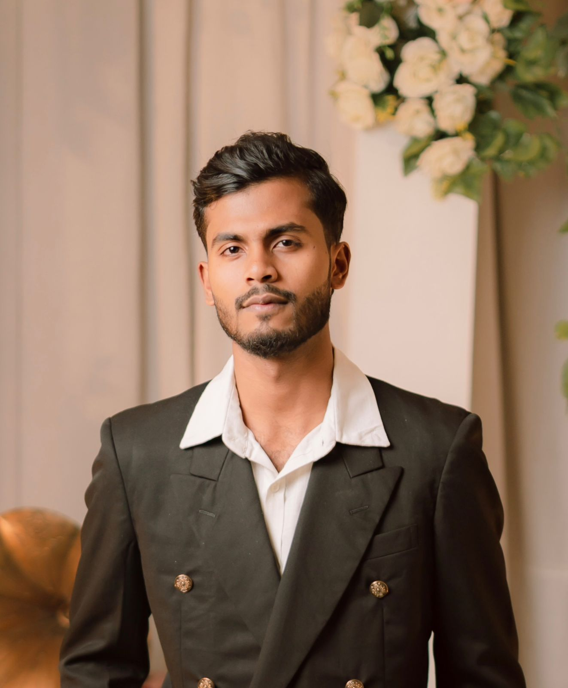

I am a hardworking and curious individual, currently studying Computer Science and Engineering. I enjoy learning new skills, exploring technology, and expressing creativity through photography, videography, and design. I value teamwork, honesty, and continuous growth.
Premier University, Chittagong
Bachelor of Science in Computer Science and Engineering (2019 - 2024)
I focus on server-side programming with Node.js, Django, or Flask, RESTful APIs, and databases like MongoDB, MySQL, or PostgreSQL. I work on user authentication (JWT, OAuth), CRUD operations, and server performance. I'm also interested in cloud deployment (AWS, Firebase), third-party APIs, and security best practices. Learning Docker, CI/CD pipelines, and microservices is also part of my growth plan. I contribute to open-source projects on GitHub.